In this task you will use template content to add desktop and mobile menus to the ‘Software Analytics’ project you created earlier and to which you then added an email sign-up form and a footer
You can display a finished version of the project web page by clicking the image below.
Learning Goals
At the end of this Tutorial you will be able to:
Copy selected HTML with text content and JavaScript code from a template file to a project web page.
Link a project web page to a renamed copy of a template stylesheet.
Edit the copied HTML, CSS and JavaScript files as required.
Your first step is to download the image file for this project website’s logo.
Right-click the image below and, from the pop-up menu displayed, choose Save Image As
Download the image file to your websites\portfolio\software\assets\img sub-folder:
If you want to include a profile image in your mobile flyout menu, save this square placeholder picture from the website/templates to your project’s assets/img folder.
Working with your two HTML files
You will begin by working with two HTML files:
The template file you will copy from and
The web page you will copy to.
In Visual Studio Code, from your websites\templates folder, open the following HTML file:
menus-template.html
From your websites\portfolio\software folder, open the web page named index.html.
If you have any other files open in Visual Studio Code, you may wish to close them.
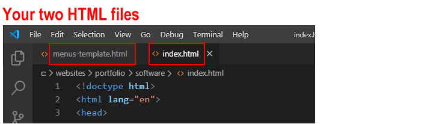
This will help you to focus only on the two HTML files you will be working with.
Copying-and-pasting the menus HTML and JavaScript
Your next step is to copy content from the menus template file into your index.html web page.
In the menus-template.html file, select and copy the menus HTML section.
In your index.html web page, click just after the start of the opening <body> tag, and press the ENTER key a few times to open up some new lines of blank space.
Paste the copied menus HTML.
Switch back to the menus-template.html file, and select and copy the JavaScript code for the menus.
In your index.html web page, scroll down to near the end of the web page, to just before the closing </body> tag.
Press the ENTER key a few times to open up some new lines of blank space.
Paste the copied JavaScript code for the menus.
When finished, save your index.html web page.
You can now close the menus-template.html file.
Linking the web page to the menus CSS file
Your next task is to link your project web page to a renamed copy of the template stylesheet file for desktop and mobile menus. Here are the steps.
In VS Code, from your websites\templates folder, open the following CSS file:
menus-template.css
From the File menu, choose the Save As command.
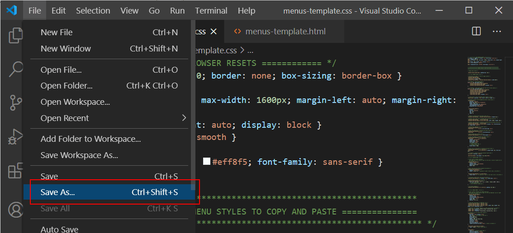
Save the template stylesheet with the name menus.css in the following folder:
websites\portfolio\software\assets\css\
This is the same folder that holds the style.css file for your ‘Software’ project.
You can now close the menus-template.css file.
In your index.html web page, add a link to the new stylesheet in the <head> as shown below.
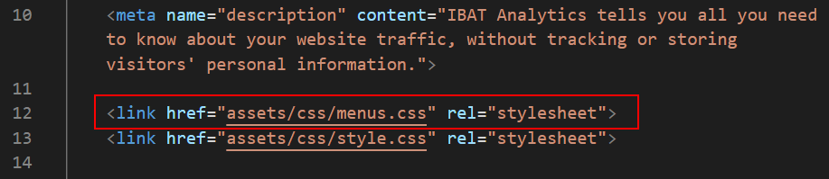
Next, open the new menus.css stylesheet, delete everything in the WEB BROWSER RESETS block, and then save and close the stylesheet.
Updating the menu logo and hyperlink
For both the desktop and mobile menus, you need to update logo image and hyperlink.
In your index.html web page, in the desktop menu block near the top of the web page, edit the logo image and hyperlink as follows.
Scroll down a few lines to the mobile menu block and copy-and-paste the new logo and hyperlink from the desktop menu to here.
Save your index.html web page.
In your web browser, the web page should look as shown below.
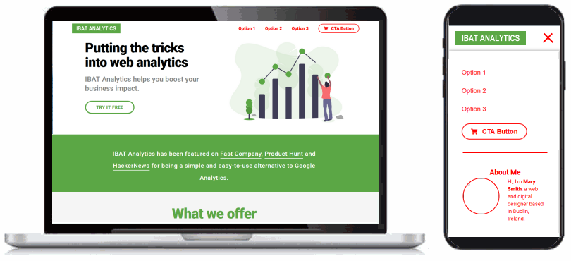
Updating the menu option hyperlinks
For both the desktop and mobile menus, you need to update the hyperlinks for the various menu options.
In your index.html web page, go to near the top of the web page, to just after the opening <body> tag.
In the desktop menu block, replace the template menu text and hyperlinks as follows.
<ul>
<li><ahref="#features">Features</a></li>
<li><ahref="#benefits">Benefits</a></li>
<li><ahref="#testimonials">Testimonials</a></li>
<li><ahref="#free-trial"class="btn-cta">Start Your Free Trial</a></li>
</ul>
Scroll down a few lines to the mobile menu block and copy-and-paste the new menu options from the desktop menu to here. Edit the text 'Start Your Free Trial' to the shorter 'Free Trial'.
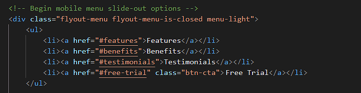
Save the index.html web page and view the result in your web browser for both desktop and mobile screen sizes.
Creating the hyperlink destinations
Now that you have created hyperlinks in the desktop and mobile menus, you need to create the destinations in the web page that these links will bring the user to.
In your index.html web page, for each of these three sections, add the following IDs that match the menu options.
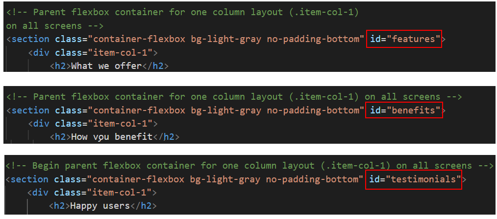
The Email Sign-up Form already has an ID named "free-trial".
Save the index.html web page,
View the result in your web browser for both desktop and mobile screen sizes. Verify that the menu options all work correctly when clicked/tapped.
Offsetting the hyperlink destinations
When you click on an option within the desktop or mobile menu, you can see that the top of the destination heading is partly 'hidden' behind the menu.
This is because of the menu-sticky class attached to both the container-menu-desktop and the container-menu-bar-mobile parent containers.
In the style.css stylesheet, you can see that the .menu-sticky style has a position value of fixed.
As a result, the rest of the web page will not 'see' the container-menu-desktop and container-menu-bar-mobile sections and will act like they are not there.
To fix this issue, in the style.css file, add the scroll-padding-top property to the html selector for the entire web page.
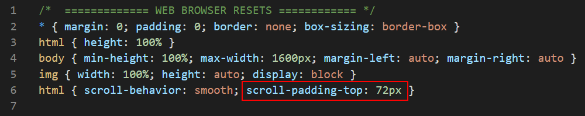
Give it a value of 72px, which is the same height as the height of your desktop and mobile menu containers.
When finished, save your style.css file and test your menus for both desktop and mobile screens. You can see that the menu containers no longer hide any of the web page content.
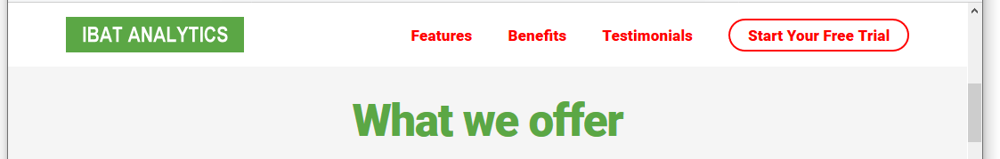
Updating the hero block spacing
You need to make a few changes to the spacing around and within the hero block at the top of your web page.
In the style.css file, for desktop/laptop screens, updating the padding values as follows:
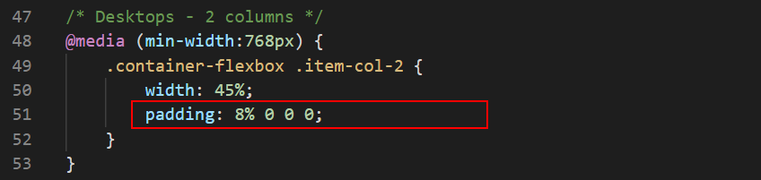
And for mobile screens, edit the padding values as follows:
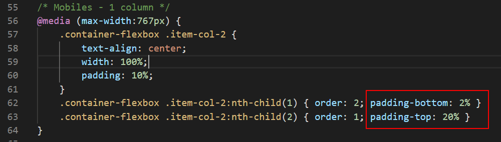
Save the style.css file.
In your web browser, the web page should look as shown below.
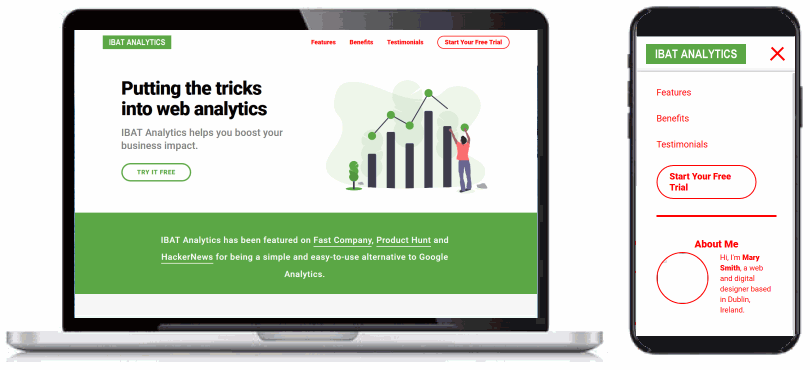
Updating the mobile menu content and links
In the lower part of the mobile menu, under the <hr> horizontal rule line, you can include some text about yourself, an image and some hyperlinks.
If you wish to include a profile picture, the link to the placeholder image is as follows.
<imgsrc="assets/img/profile-pic.jpg"alt="Mary Smith, Web Designer">
If you wish to include an email address or social media hyperlinks, replace the template-provided details with your own. Delete any details in the template you do not want to include.
If you want to link your website's Home page, the link should be as follows.
<ahref="../../index.html">Home</a>
If you want to link your website's Portfolio page, the link should be as follows.
<ahref="../index.html">Portfolio</a>
And if you want to link your website's Contact Form page, the link should be as follows.
<ahref="../../contact/index.html">Contact</a>
Save your index.html web page.
In your web browser, the web page should look as shown below on mobile screens.
Updating the menu colours
In the menus-template.html file you copied-and-pasted into your index.html web page, the CSS class of menu-light is assigned to:
The parent container for the desktop menu, named container-menu-desktop.
The two parent containers for the mobile menu: container-menu-bar-mobile and flyout-menu
In the menus.css stylesheet, this menu-light class sets text and hyperlinks red against a white background. You can see just a few examples of these colour properties and values below.
Let's update this red colour to match the green colour of #5ba745 used in the web page.
In the menus.css stylesheet, scroll to the top of the file.
On the VS Code menu, click the Edit option and then click the Replace command.
A new search-and-replace dialog box appears at the top-right of the Visual Studio Code screen.
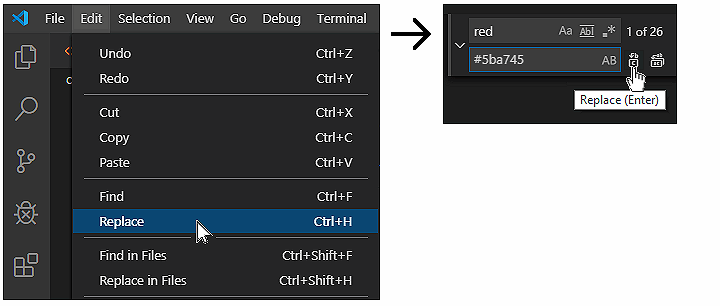
In the first field, enter red.
In the second, enter #5ba745.
Click the left icon for Replace. Do not click the right icon for Replace All.
One by one, replace every occurrence of the colour red with #ff5000 in your stylesheet.
(If you choose the Replace All option, Visual Studio Code will replace the letters 'red' inside words such as 'centered' that may be written in comments.)
Save the style.css file.
In your web browser, the web page should look as shown below.
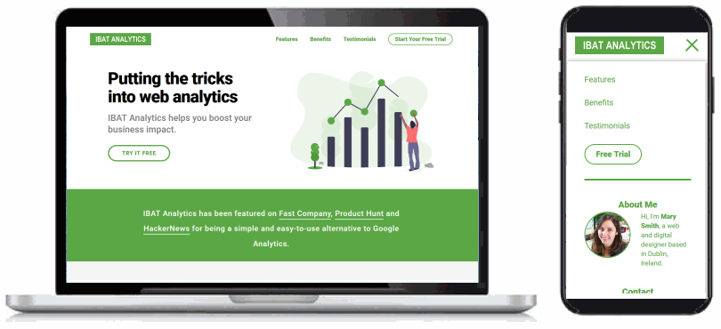
Adding the menu style-swapping effect
Your final step is to use some JavaScript code in the menus-template.html file you copied-and-pasted into your index.html web page to create the following effect:
When the user displays the top of the web page, either on desktop or mobile screens, the menu has a green background and the hyperlinks are displayed in white text.
When the user scrolls down the web page, the green background is replaced by a solid white colour. And the colour of the text hyperlinks changes to green.
To achieve this effect, follow these steps.
In the index.html file, for the menu-related blocks below, replace the class of menu-light with the menu-dark class.
Scroll down to near the bottom of the web page, and remove the // ‘comment‘ characters from the beginning of the JavaScript code a shown below.
Next, edit the JavaScript code as shown below.
Save the style.css file.
When the user scrolls down the web page:
This JavaScript code removes the menu-dark class and replaces it with the menu-light class. It also adds the menu-drop-shadow class that places a drop shadow effect under the menu.
When the user scrolls back up the web page:
The JavaScript code removes the menu-light and menu-drop-shadow classes and replaces them with the original menu-dark class.
That’s it. You have now completed your ‘Software Analytics’ project.
Uploading your project to GitHub
The final step is to upload your project to GitHub.
All the files you have updated for this project are in the software sub-folder of your websites/portfolio folder.
So the easiest option is simply to upload the entiresoftware sub-folder to your account on GitHub.
If you are not already signed in to your GitHub account, sign in now.
On the left of your GitHub home page, click the name of the repository that holds your web pages.
On the next GitHub screen displayed, click the portfolio folder.
GitHub should now display your portfolio folder.
With the portfolio folder displayed on your GitHub screen, click the Add file button and, from the dropdown list displayed, choose the option Upload files.
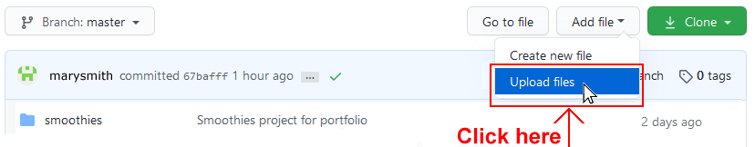
In File/Windows Explorer on your computer, display your portfolio folder and then drag-and-drop the software folder to the GitHub tab in your web browser.
After uploading the software folder, scroll down to the bottom of the GitHub screen, enter a short message in the Commit changes box, click the Commit changes button, and wait for the upload to complete.
Your updated ‘Software Analytics’ project web page is now published on GitHub at a web address similar to the following, where username is the username you have chosen for your GitHub account: